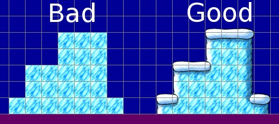

Levels
This should be a guideline for level designers. You can of course do whatever you want in your level design, but it might be worth to try to get a consistent look&feel, the following list lists a few issues which should help with that.
- all levels must have a fixed height of 15 tiles, Milestone1 will not have vertical scrolling and will run at 640x480, thus this limitation
- all normal levels should have a length of around 500 tiles with one reset point in the middle
- there will be bonus levels/rooms which should either be one screen large (20x15) or multiple screens (60x15), they should be much smaller than normal levels
- levels must not mix different tiles sets, a level should focus on one tileset and use this consistently, having a translation at the end of the level to the next one is ok, but there shouldn't be an overlap in the levels itself
Also make sure that the transitions from one tile to another are right and look good, so use the right tiles in the right places and don't simply add block on block:
